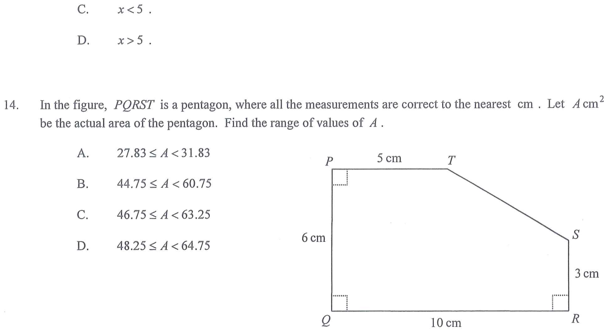

估算與誤差 · 面積的上限與下限

由圖：$PQ=6$、$QR=10$、$RS=3$、$PT=5$（cm），且 $\angle P$、$\angle Q$、$\angle R$ 均為直角。
所以 $PQ\perp PT$、$PQ\perp QR$、$QR\perp RS$，整個五邊形就是 $10\times6$ 的長方形切去右上角的直角三角形。
$$A=10\times6-\frac{1}{2}(10-5)(6-3)=60-7.5=52.5$$
即名義面積為 $52.5\ \text{cm}^{2}$，正好落在四個選項的中間，故不能靠「大約」判斷，必須算上下限。
$$A_{\min}=9.5\times5.5-\frac{1}{2}(9.5-4.5)(5.5-2.5)=52.25-7.5=44.75$$
$$A_{\max}=10.5\times6.5-\frac{1}{2}(10.5-5.5)(6.5-3.5)=68.25-7.5=60.75$$
實際面積恆在兩者之間，且上限不可取等號：
$$44.75\le A<60.75$$
故答案為 B。選項 A 是把 $10$ 與 $5$ 誤作斜邊長度來計算。